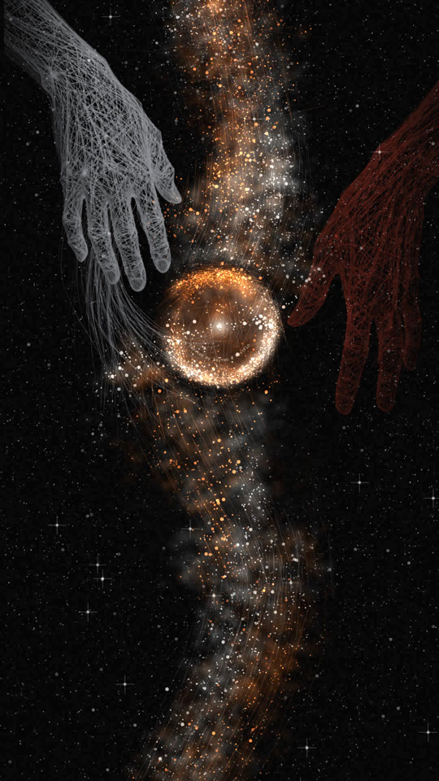
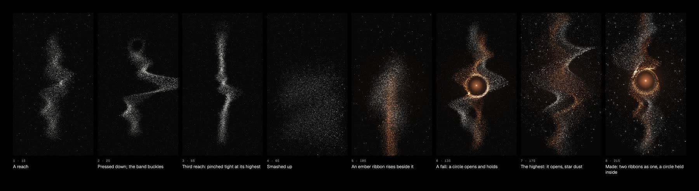
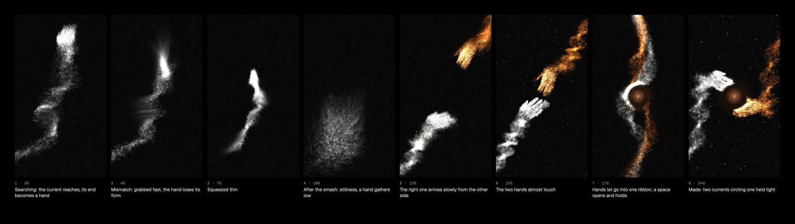
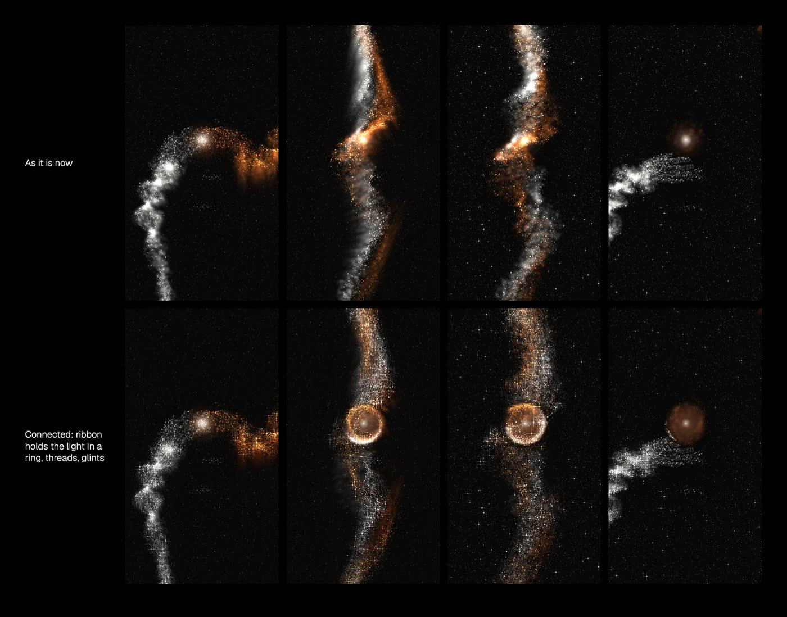
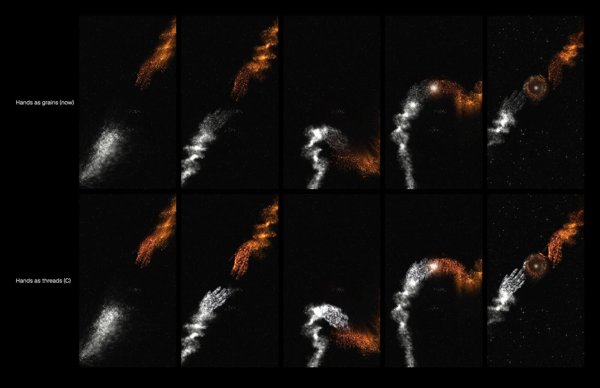
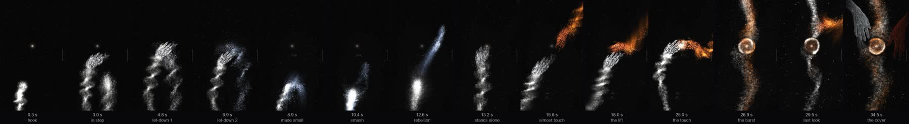

1 2 3 4 5 6A white stream of light climbs toward a small point high in the dark. Another climbs beside it, the same light, the same height, until it turns. It lets the white down three times, each worse, until the white is pressed small and smashed. Then the white bursts out on its own. Only then does the right one arrive: a different kind of light that comes in beneath when the white falls, and stays. Where they touch, a light is lit, exactly where the dream was.
The opening words are Emma Watson's, from On Purpose with Jay Shetty: without the right people around you, the ones who can hold the level of your commitment, you get smashed up.
In pair programming two people share one keyboard: one drives, one navigates, both think. Held Commitment was made the same way, with an AI partner. Every frame is code, not a prompt. The work moved through twelve steps, from a line of writing to a signed still, and every step needed a yes from Peyton. The code itself stays private; this page shows the method.
Instead of redrawing the story for the music, Ember bent its clock: one time map moves every approved moment onto a bar, the song's silence, its lift, or the moment the voice comes in. After the lift, the light breathes once per bar, never per beat, so it swells with the song instead of twitching.
The words are Peyton's caption, set against the moment each line speaks to. The motion was built from her writing first; the caption was finished after, so the match is a reading, not a lyric sheet. The song's own words are never shown.
TypeScript and React for the art · Python for reading the music · shell scripts with ffmpeg for the files.Remotion 4 (React for video).librosa for tempo, bars, energy and the timing curve · faster-whisper on this Mac for word timing only.Claude Code, Anthropic's agentic coding tool: it writes, runs and checks the code, renders, and reads its own frames back.17,000 white · 13,000 ember · 9,000 grey · 8,000 star dust1080 × 1920 · 30 fps · 1,059 frames · a silent posting file and a reference copy with the song.0:15.5, the first beat of a phrase: the song enters cleanly, no fade.2.05 s · A minor · longing, tender, bittersweet.+1.6 dB · −13.9 LUFS · peak −3.3 dBFS. At +20 dB the quiet opening flattened into the peak.64 / 100 on round 1. Blind title: "Not the first one, the one that stayed".Six versions over three days. Each one exists because the one before it was turned down.





The right one is not always a person. Sometimes it is the people who can hold your commitment. Sometimes it is the right tool, the right system, the right agent, built for the way you work.
The series is about that search, and about what happens after it: a human and an AI working hand in hand, each bringing what the other cannot, the way Peyton works with Ember.